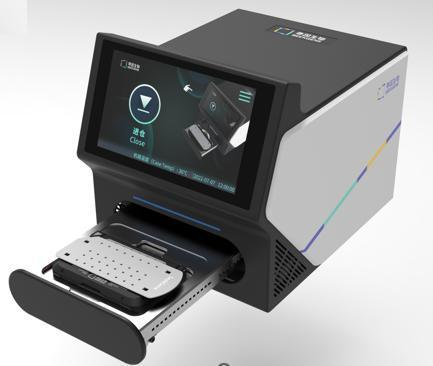
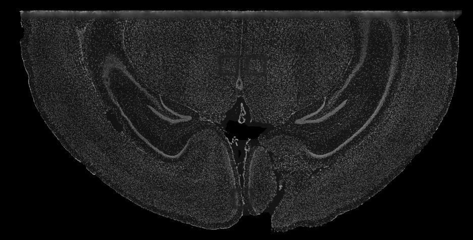
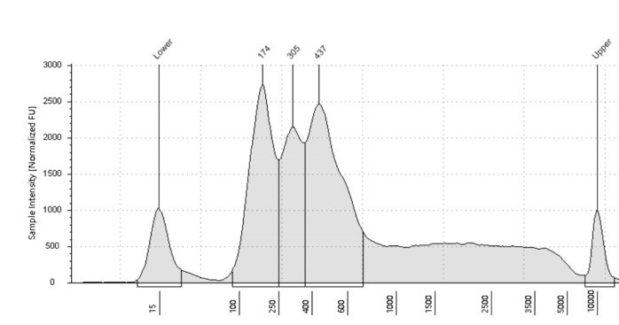

CONTROL MAP
SeekSpace SOP实验路径
已完成当前步骤待执行
SEEKSPACE WORKFLOW CONTROL · SOP v20260717
面向寻因科技单细胞空间 ATAC 转录组实验的演示控制台。把设备能力、样本门槛、9 步建库流程与空间数据分析串成一条可审计证据链。
RUN OVERVIEW / 01
先确认设备与样本，再放行 SOP，最后把文库和空间图像交给数据引擎。
DEVICE REGISTRY / 02
设备不是黑盒：记录能力、接口、校准状态和当前实验授权范围。
SAMPLE INTAKE / 03
把样本来源、切片条件和核悬液 QC 在进入 Step 2 前锁定。
SP-20260810-01 · OCT 包埋新鲜冷冻组织
滑动后点击“重新评估”，查看 QC 不通过时的拦截逻辑。
PROTOCOL RUNNER / 04
按说明书拆成可暂停、可检查、可追踪的阶段；高风险动作默认只做 dry-run。
选择左侧任意步骤查看对应的设备、样本和数据约束。

选择 SOP 步骤后只切换对应过程配图；结果图片、识别标记和放行结论位于下方独立的 Agent 结果确认区。
DATA & QC / 05
数据按说明书的数据契约组织；每个 QC 卡都能回到具体的测序或分析输入。


视觉模型给出结构化识别结果，规则引擎负责最终放行；任一关键对象缺失、置信度不足或阈值不合格，结果自动转为 HOLD。
AUDIT TRAIL / 06
把设备注册、SOP 动作、QC 判断和数据产物合成一个可复核的实验包。
设备、样本、SOP 和数据文件均已绑定，真实设备执行仍需人工审批。